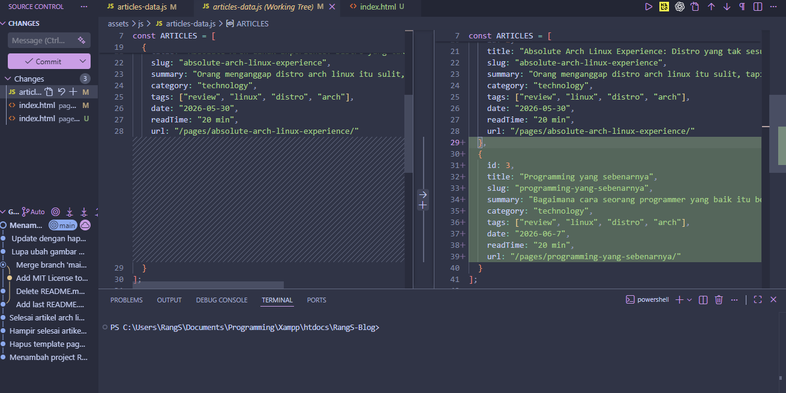
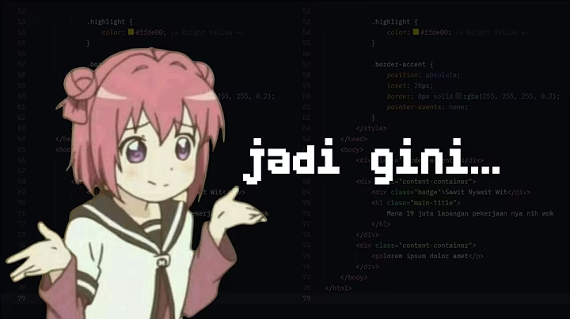

Apa itu Programming?
Sebelum membahas lebih jauh, kita harus tahu dulu apa itu programming. Programming adalah proses menulis instruksi-instruksi yang dapat dimengerti oleh komputer untuk melakukan tugas tertentu.
"Talk is cheap. Show me the code."
— Linus Torvalds, pencipta Linux
Apa yang sebenarnya membuat programmer itu baik? Kode etik apa yang dipegang dan bagaimana cara berfikir sebagai programmer sejati? kita akan membahasnya dalam artikel ini.
File Management
Salah satu aspek penting dalam programming adalah manajemen file. Seorang programmer yang baik harus tahu bagaimana mengatur file dan folder dengan rapi.
Biar ku tebak, selama Anda membuat kode, anda pasti menyimpannya dalam satu folder, bukan dengan folder-folder lain seperti assets, components, utils kan? Tampilan VS Code Anda pasti seperti ini:
MyProject/
├── index.html
├── style.css
├── script.js
├── image.png
Nah, sebenarnya cara seperti itu tidaklah salah, tapi bisa menjadi masalah ketika proyek Anda mulai berkembang dan memiliki banyak file. Bayangkan jika Anda memiliki 100 file dalam satu folder, aku yakin Anda akan kesulitan untuk menemukan mana file yang hendak dijadikan referensi, file yang dijadikan style, file yang dijadikan script, dan lain-lain. Ini bisa membuat proyek Anda menjadi berantakan dan sulit untuk dikelola.
Cobalah untuk mengatur file Anda dengan lebih baik, aku yakin hal tersebut akan sangat berguna! Bahkan Framework modern seperti Vite, Angular dan Laravel pun sudah memiliki struktur foldernya sendiri.
MyProject/
├── index.html
├── assets/
│ ├── css/
│ │ └── style.css
│ ├── js/
│ │ └── script.js
│ └── images/
│ └── image.png
├── components/
│ └── Header.js
├── utils/
│ └── helper.js
Di atas adalah contoh struktur folder yang terorganisir daripada tidak sama sekali. Sekarang muncul pertanyaan, Bagaimana cara saya menyambungkan satu file dengan file lainnya? Apa yang harus saya tulis pada:
<link rel="stylesheet" href="?">Sudah pasti Anda akan mendapat masalah karena tidak tahu cara menyambungkan file dengan benar. Maka dari itu kita masuk ke segment penting berikutnya!
Terminal
"Apaan sih pake terminal segala, terminal tuh gak penting!". Itulah yang saya dengar dari banyak orang entah itu dari grup coding atau bahkan teman kelas sendiri. Apa yang salah dari Terminal? Terminal adalah alat yang sangat penting untuk seorang programmer. Fungsinya cukup mirip dengan GUI, yang membedakan hanyalah menggunakan tulisan.
Terdapat banyak sekali perintah yang bisa kamu gunakan di terminal. Berikut adalah penjelasannya:
ls - untuk melihat daftar file dan folder dalam direktori saat ini
cd - untuk berpindah direktori
mkdir - untuk membuat folder baru
touch - untuk membuat file baru
rm - untuk menghapus file atau folder
cp - untuk menyalin file atau folder
mv - untuk memindahkan atau mengganti nama file atau folder
cat - untuk menampilkan isi file
Sebagai catatan, perintah-perintah di atas adalah perintah yang hanya ada di terminal berbasis Unix seperti Linux dan MacOS. Jika kamu menggunakan Windows, kamu bisa menggunakan Command Prompt atau PowerShell yang memiliki perintah yang sedikit berbeda.
Oke, setelah tahu tentang Terminal, Apa yang harus kita lakukan untuk menyelesaikan masalah yang tadi? Berikut adalah contoh implementasinya:
Bayangkan kamu memiliki proyek seperti berikut:
MyProject/
├── index.html
├── assets/
│ ├── css/
│ │ └── style.css
│ ├── js/
│ │ └── script.js
│ └── images/
│ └── image.png
Bukalah index.html, lalu untuk menyambungkan style.css, kamu bisa menulis:
<link rel="stylesheet" href="assets/css/style.css">
Cukup sederhana bukan? Kode di atas mengartikan bahwa
file index.html ingin mengambil file dari folder assets ke folder css dan ke file style.css
Sekarang muncul pertanyaan baru lagi, bagaimana jika file style.css berada di atas file index.html? Misalnya seperti ini:
MyProject/
├── pages/
│ └── index.html
├── style.css
Bagaimana cara kita menyambungkan file style.css ke index.html?
Inilah pentingnya belajar terminal!
Jika sudah tahu perintah cd, Pasti tidak asing dengan "cd .."
Untuk menyambungkan file style.css ke index.html, kamu bisa menulis:
<link rel="stylesheet" href="../style.css">
Kode di atas mengartikan bahwa
file index.html ingin mengambil file dari folder di atasnya (../)
lalu ke file style.css
Analoginya seperti ini:
Kamu adalah seorang index.html,
Kamu ingin bertemu style.css,
Tapi style.css berada di lantai atasmu,
Tidak mungkin kau terbang kan?
Maka dari itu kamu harus menaiki tangga dulu (../)
Setelah naik tangga dengan (../)
Barulah kamu bisa bertemu dengan style.css
Bagaimana? masih pusing? Berlatihlah dengan membuat folder, lalu buat file di dalamnya dengan hanya menggunakan Terminal.
Dengan menguasai Terminal, kamu akan menjadi lebih efisien dalam mengelola proyekmu. Kamu tidak perlu lagi membuka file explorer untuk mencari file yang ingin kamu edit, cukup dengan beberapa perintah di terminal, kamu bisa langsung menuju file tersebut dan membukanya dengan editor favoritmu.
Bahkan, ketika aku ingin membuka proyek yang sudah aku buat sebelumnya dengan VS Code. Aku tinggal masuk ke folder proyek tersebut dan ketik "code ." Nanti VS Code akan langsung terbuka dengan proyek yang sudah aku buat sebelumnya. Cukup praktis bukan? Apakah hanya terminal? Tentu saja tidak, kita masuk ke segment yang tak kalah pentingnya yaitu
Git atau Version Control System (VCS)
Pada bagian atas artikel ini, aku mengambil quote dari Linus Torvalds. Mengapa harus Linus Torvalds? Karena dia adalah pencipta Linux, salah satu Kernel sistem operasi paling populer di dunia, dan juga yang paling penting ia menciptakan Git
Seolah tak asing dengan kata tersebut tapi tidak tahu apa itu Git, Version Control System (VCS) atau Git yang kita bahas pada artikel ini adalah sistem yang digunakan untuk mengelola perubahan pada kode sumber proyek. Dengan menggunakan VCS, kamu bisa melacak perubahan yang terjadi pada kode sumber, melihat siapa yang melakukan perubahan, dan bahkan kembali ke versi sebelumnya jika terjadi kesalahan.
Terdengar aneh dan buang-buang waktu? simpelnya seperti ini!
Bayangkan kamu bekerja sebagai bidang IT di sebuah perusahaan.
Bos mu ingin kamu mengubah tampilan website perusahaan.
Kamu pun mulai mengubah kode sumber website tersebut,
Tapi setelah mengubahnya, bos mu tidak suka.
Ia pun memintamu untuk mengembalikan tampilan website seperti semula.
Kau berfikir "Waduh, gimana cara balikinnya?"
Di saat inilah Git bersinar!
Untuk mengatasi masalah tersebut, kamu harus menggunakan Git dari awal untuk melacak perubahan kode yang kau buat.
Git tidak terinstall otomatis di komputer, kamu harus menginstallnya terlebih dahulu. Berikut adalah link untuk menginstall Git: https://git-scm.com/install
Setelah menginstall Git, waktunya kita menggunakannya. Buka VS Code atau editor apa pun terserah (Pastikan yang sudah ada Integrated Terminal, bukan Text Editor yang tak memiliki Integrated Terminal seperti Notepad, Vim dan Nano (Bentar, di sini ada yang pake Vim?)), lalu buka terminal dan ketik perintah berikut untuk menginisialisasi Git di proyekmu:
git initSetelah itu, kamu bisa mulai menambahkan file yang ingin kamu lacak dengan perintah berikut:
git add .
git commit -m "Pesan atau catatanmu tentang perubahan yang kamu buat"
Apa maksud dari kode diatas?
git add . = Menambahkan semua file yang telah diubah ke staging areagit commit -m "Pesan" = Menyimpan perubahan yang telah ditambahkan ke repository
Jika sudah pelajari terminal, kamu pasti tahu kalau tanda . itu artinya semua. Jadi git akan menambahkan semua file ke staging area. Masih bingung apa Staging Area? Staging Area adalah tempat sementara di mana kamu bisa menambahkan perubahan yang ingin kamu commit. Jadi, kamu bisa memilih perubahan mana yang ingin kamu simpan dan mana yang tidak.
Lakukanlah perintah di atas setiap kali membuat perubahan pada kode sumbermu. Sulit untuk membiasakan diri menggunakan Git dalam terminal? Jangan Khawatir, VSCode sudah menyediakan ekstensi Git yang memudahkan kamu untuk menggunakan Git tanpa harus mengetik perintah di terminal. Kamu bisa menginstall ekstensi Git di VS Code dan mulai menggunakan fitur-fitur Git seperti commit, push, pull, dan lain-lain dengan mudah melalui antarmuka grafis. Untuk cara installnya cari saja di Extensions dengan kata kunci "Git" atau "Git Extension".
Ingin melihat kegunaan Git secara langsung? Coba lihat foto berikut:

Pada gambar tersebut, terlihat jelas bahwa aku menggunakan ekstensi Git di VS Code. Pada bagian kiri bawah adalah daftar yang telah ku buat (yang git add dan git commit itu). Di bagian kiri atas adalah file yang telah di ubah. Di bagian kanan (Lebih tepatnya Text Box) berisi perbandingan kode sebelum dan sesudah diubah.
Namun, tidak sembarangan juga menggunakan Git, kamu harus tahu kapan waktu yang tepat untuk melakukan commit (Semacam Save File). Yang paling penting dari Git adalah pesan commit. Jangan pernah menulis pesan commit yang tidak jelas atau bahkan ngawur seperti "Update file", "Masukkin Commit" atau yang paling sering adalah "Selesai". Come On Bro! Pesan commit haruslah jelas dan deskriptif, sehingga orang lain (atau bahkan dirimu sendiri di masa depan) bisa memahami perubahan apa yang telah kamu buat hanya dengan membaca pesan commit tersebut.
Coba lihat gambar sebelumnya, Aku selalu menulis pesan commit yang jelas dan deskriptif Sehingga aku tahu apa yang telah aku ubah.
Baca Juga Artikel: absolute arch linux experience
Absolute Basics
Jangan menganggap bahwa kode yang ditulis dengan bahasa pemrograman yang berbeda itu sulit! Semua kode itu pada dasarnya sama saja. Kok saya berani mengatakan hal tersebut? Berikut penjelasannya
Variable, Declaration
Setiap bahasa pemrograman pasti memiliki konsep variable dan declaration. Berikut adalah contoh variable dan declaration dalam beberapa bahasa pemrograman:
// JavaScript
let name = "RangS di JS";
// Python
name = "RangS di Python"
// PHP
$name = "RangS di PHP";
// C++
std::string name = "RangS di C++";
Seperti yang kamu lihat, semua bahasa pemrograman memiliki konsep variable dan declaration. Hanya saja sintaksnya yang berbeda-beda. Jadi, jika kamu sudah menguasai satu bahasa pemrograman, kamu akan lebih mudah untuk belajar bahasa pemrograman lainnya karena konsep dasarnya sama saja.
Ada dua jenis variable, yaitu variable yang bisa diubah (mutable) dan variable yang tidak bisa diubah (immutable). Contohnya seperti ini:
// JavaScript
let mutableVariable = "Saya bisa diubah";
const immutableVariable = "Saya tidak bisa diubah";
// C++
std::string mutableVariable = "Saya bisa diubah";
const std::string immutableVariable = "Saya tidak bisa diubah";
Seperti yang kamu lihat, variable yang mutable bisa diubah nilainya, sedangkan variable yang immutable tidak bisa diubah nilainya setelah dideklarasikan. Jadi, jika kamu ingin membuat variable yang nilainya tidak boleh berubah, gunakanlah variable yang immutable. Dari contoh di atas, kita hanya menambahkan const di depan variable. Di setiap bahasa pemrograman, cara untuk membuat variable immutable itu berbeda-beda. Tapi intinya sama saja, kita hanya perlu menambahkan keyword tertentu di depan variable untuk membuatnya immutable.
Data Types, Loop
Konsep Data Types adalah konsep paling sederhana, hanya untuk membuat variable tersebut memiliki tipe data tertentu. Data Types sendiri terdapat banyak sekali jenisnya, mulai dari String, Number, Boolean, Array, Object, dan lain-lain. Berikut adalah contoh Data Types dalam beberapa bahasa pemrograman:
// JavaScript
let stringVariable = "Saya adalah string";
let numberVariable = 42;
let booleanVariable = true;
// Python
stringVariable = "Saya adalah string"
numberVariable = 42
booleanVariable = True
// PHP
$stringVariable = "Saya adalah string";
$numberVariable = 42;
$booleanVariable = true;
// C++
std::string stringVariable = "Saya adalah string";
int numberVariable = 42;
bool booleanVariable = true;
Seperti yang kamu lihat, semua bahasa pemrograman memiliki konsep Data Types. Hanya saja sintaksnya yang berbeda-beda. Jadi, jika kamu sudah menguasai satu bahasa pemrograman, kamu akan lebih mudah untuk belajar bahasa pemrograman lainnya karena konsep dasarnya sama saja.
Kita masuk ke loops, Loop adalah konsep untuk mengulang kode sampai kondisi tertentu terjadi. Berikut implementasinya:
// PHP
for (i = 0; i < 5; i++){}
// Python
for i in range(5):
Inti dari kode di atas adalah
Selama data berada kurang dari 5,
Maka melakukan sesuatu
Maksud dari kode diatas untuk mengulang data sebanyak yang diketahui. Lebih sering menggunakan For untuk melakukan loop. Lalu ada konsep kedua loop yaitu While. Berikut
// PHP
while (kondisi){}
// Python
while True:
Kode di atas akan melakukan perulangan atau Loop
Terus-menerus sampai kondisi tertentu tercapai.
Dari tadi kita bahas kondisi tertentu tapi tak tahu apa itu kondisi, Karena itu kita lanjut ke pembahasan selanjutnya
If Statements / Jika
Seperti namanya, If Statement! Jika kode berada dalam kondisi tertentu, maka ia akan melakukan hal yang ada dalam kondisi tertentu. Berikut contohnya:
// Python
if a < 5:
print("Kurang dari lima")
elif a == 0:
print("Nilai sama dengan Nol")
else:
print("Lebih dari lima")
// C++
if (a < 5){
std::cout << "Kurang dari lima";
} else if (a == 0){
std::cout << "Nilai sama dengan Nol";
} else{
std::cout << "Lebih dari lima";
}
Maksud dari kode di atas adalah Jika
Nilai a kurang dari 5 maka print "Kurang dari lima".
Begitu seterusnya sesuai dengan nilai a pada di luar fungsi If.
Intinya If Statements digunakan untuk mengecek jika nilai sama dengan tertentu maka akan melakukan tertentu.
Array
Ini adalah konsep tersulit dalam pembahasan kali ini, Array adalah Variabel yang menyimpan banyak data sekaligus. Array sangat berguna untuk menyimpan data yang dapat diakses dengan index. Contohnya seperti berikut:
// Python
mobil = ["Toyota", "BMW", "Ford GT"]
print(mobil[0])
Apa maksud dari mobil[0]
Artinya adalah mengambil nilai pada mobil yang paling awal.
Dari kebanyakan bahasa pemrograman,
Data Array biasanya dimulai dari 0
mobil = ["Toyota", "BMW", "Ford GT"]
^ ^ ^
| | |
0 1 2
Tapi hati-hati juga, terkadang ada bahasa pemrograman
Yang memulai dengan angka 1. Contohnya saja Lua.
Fungsi Bahasa Pemrograman
Semua bahasa pemrograman memiliki fungsinya masing-masing. Misalnya Python untuk Machine Learning, AI dan Cybersecurity. Lalu C untuk System Design. Lalu PHP untuk Web Apps. Dari semua yang dibahas, cobalah pelajari Javascript. Javascript bukanlah bahasa pemrograman biasa, melainkan juga bahasa pemrograman paling rakus diantara semuanya. Javascript bisa menjadi Web Apps, Manipulasi HTML, Desktop Application dan bahkan Mobile Apps, Meski begitu aku tak tahu bagaimana performanya.
Kesimpulan
Bahasa pemrograman tidaklah sesulit yang kita kira selama ini. Jika sudah paham konsep mendasar seperti yang dijelaskan di atas sudah pasti akan sangat-sangat mudah untuk mempelajari bahasa pemrograman lain.
Jika tertarik untuk mempelajari lebih lanjut, kusarankan belajar dari Channel Bro Code dan FreeCodeCamp.org.
Atau jika ingin pelajari sejarah bisa tonton video berikut:
